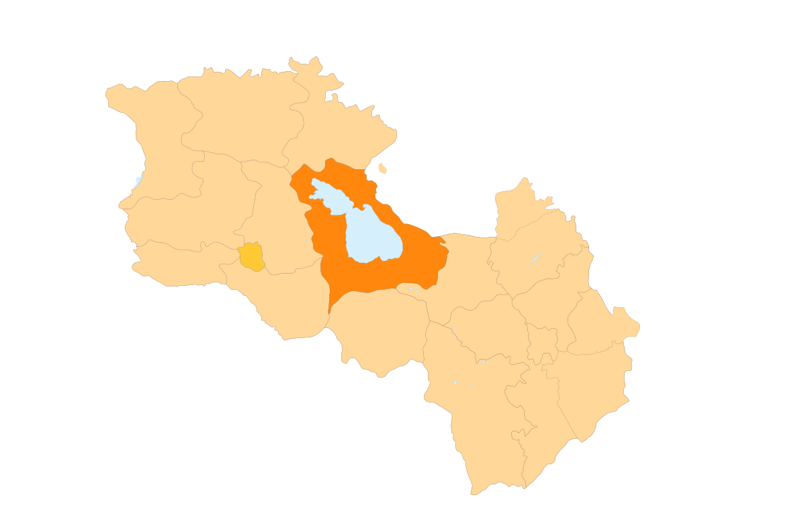

Հետ գնալ
Գեղարքունիքի մարզ
Գեղարքունիք, մարզի կարգավիճակ ունեցող վարչատարածքային միավոր Հայաստանի արևելքում։
Սահմանակից է հյուսիսում՝ Տավուշի, արևմուտքում՝ Կոտայքի և Արարատի, հարավում՝ Վայոց ձորի մարզերին, արևելքում՝ Ադրբեջանի Հանրապետության Գետաբեկի,
Դաշքեսանի և Թովուզի շրջաններին, հարավ-արևելքում՝ Արցախի Հանրապետության Շահումյանի շրջանին։ Մասշտաբով երկրի ամենամեծ մարզն է, որի մարզկենտրոնն է հանդիսանում Գավառ քաղաքը։
Մարզում է գտնվում Հայկական լեռնաշխարհի երեք խոշորագույն լճերից մեկը՝ Սևանա լիճը։
Գեղարքունիքի մարզի քաղաքային համայնքների թիվը 5 է՝
Գեղարքունիքի մարզի տարածաշրջաններն են՝
- Կամոյի անվան
- Կրասնոսելսկ
- Մարտունի
- Սևան
- Վարդենիս